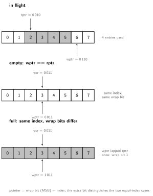

RTL describes registers and the logic between them. Use SystemVerilog constructs that make simulation and synthesis agree.
A module is the unit of hardware. logic is the default
data type. Connect ports by name when instantiating, never by
position.
module and2 (
input logic a,
input logic b,
output logic y
);
assign y = a & b;
endmodule
and2 u_and (.a(x), .b(z), .y(w)); // instantiationOverride parameters and connect ports compactly at instantiation:
adder #(.W(16)) u_add (.a, .b, .sum, .cout); // .a is shorthand for .a(a)
fifo #(.W(8), .DEPTH(32)) u_fifo (.*); // .* auto-connects same-named nets#(.W(16)) overrides one instance’s parameter.
.a connects a(a); .* connects
remaining matching names. Prefer named connections so interface changes
remain visible.
logic: a 4-state bit (0,
1, x unknown, z high-impedance).
Use it for single-driver signals. Resolved multi-driver connections need
a net such as wire or tri.logic [7:0] data; is an 8-bit
bus, data[3:0] a slice, {a, b} concatenation,
{4{a}} replication.<width>'<base><value>, for example
8'hA5, 4'b1010, 12'd42. Size
datapath literals; use context-sized '0 and '1
for fills.#(parameter int W = 8).A bit pattern has no signed meaning until its type gives it one.
Mixed signed/unsigned expressions can change extension and comparison
behavior; make operands’ widths and signedness agree before arithmetic.
Assignment to a narrow destination truncates high bits. Concatenations
are unsigned; $signed changes interpretation, not
width.
logic [7:0] a, b;
logic [8:0] sum;
assign sum = {1'b0, a} + {1'b0, b}; // explicitly preserve carryFor a full product, provide the full destination width and check
expression sizing. >>> sign-fills only for a
signed left operand. Avoid unsized literals in datapaths.
Simulation x means unknown, not a physical third logic
level or permission to optimize. A specification don’t-care grants
implementation freedom; confusing the two hides bugs.
typedef names a type; packed struct groups
fields into a vector; enum names values such as FSM
states.
typedef logic [31:0] word_t; // named alias
typedef struct packed { // packed = one contiguous bit vector
logic valid;
logic [3:0] id;
logic [26:0] payload;
} pkt_t; // 32 bits, synthesizes as a bus
pkt_t p;
assign p.valid = 1'b1; // field access
word_t raw;
assign raw = p; // continuous packed-vector connectionlogic [7:0][3:0], dimensions before the name), the
synthesizable choice for buses. An unpacked array puts
dimensions after the name (logic [7:0] mem [0:255]) and
models memory or register arrays. Only packed types cast freely to and
from a flat vector.logic,
integer, and int are 4-state
(0 1 x z); bit is 2-state (0 1
only). Use 4-state logic for RTL so an uninitialized signal
shows as x instead of a silently legal 0.
2-state types can synthesize, but hide unknowns in simulation.typedefs,
parameters, and functions so every module agrees on one definition:
package types_pkg; typedef ...; endpackage, then
import types_pkg::*;. One source of truth for a bus width
beats copy-pasted parameters.Drive combinational outputs with continuous assign or
always_comb (blocking =). Operator
families:
| Family | Operators | Effect |
|---|---|---|
| Bitwise | & | ^ ~ |
per bit on a vector |
| Logical | && || ! |
1-bit truth value |
| Reduction | &a |a ^a |
fold a vector to one bit |
| Arithmetic / compare | + - * < == != |
infer adders, comparators |
Assign every output on every path of always_comb;
otherwise tools report an error or infer a latch. A default assignment
at the top is usually simplest:
always_comb begin
y = 4'b0000; // default prevents a latch
if (en) y[a] = 1'b1; // one-hot decoder
endalways_comb infers sensitivity and runs once at time
zero. Assign intermediate variables before reading them: variables
written in the block are excluded from implicit sensitivity, and the
block does not retrigger itself.
Replicate structure with generate:
genvar i;
generate for (i = 0; i < N; i++) begin : g
full_adder u (.a(a[i]), .b(b[i]), .cin(c[i]), .s(s[i]), .cout(c[i+1]));
end endgenerateModel edge-triggered state with always_ff and the
nonblocking assignment (<=):
always_ff @(posedge clk) begin
if (rst) q <= '0; // synchronous, active-high reset
else if (en) q <= d; // load only when enabled
endFor an asynchronous reset, add it to the sensitivity list:
@(posedge clk or negedge rst_n); the reset-release hazards
this creates are covered in
Synthesis,
Timing and Power.
The rules that keep synthesized hardware matching simulation:
| Rule | Why |
|---|---|
always_comb uses blocking = |
matches combinational evaluation order |
always_ff uses nonblocking <= |
all flops update together on the edge, modelling real registers |
| One signal driven from one block | multiple drivers create races and x |
| Assign every combinational output on every path | prevents unintended latches; a default alone is
insufficient if it omits an output |
Use unique/priority only when
guaranteed |
unique checks overlap; both check missing matches
without a default and may enable don’t-care
optimizations |
| Name signals by pipeline stage | a stale-operand bug is visible in the name (a_r[2] vs
a_r[3]) |
Use nonblocking assignments for stored state and blocking assignments for combinational calculations.
Each standard block, with its structure and coding pattern, lives in its home note:
| Block | Where |
|---|---|
| mux, decoder, encoder, adders, shifters, ALU | Combinational Circuits |
| flip-flops, registers, shift registers, counters, LFSR | Sequential Circuits |
| FSMs (three-block style, Mealy/Moore, encodings) | Sequential Circuits |
| register file, RAM | Sequential Circuits |
| pipelining a datapath (worked example) | Synthesis, Timing and Power |
Single-clock FIFO with asynchronous read. Requires
W >= 1 and power-of-two DEPTH >= 2. Read
data is valid only when !empty. Requests are accepted using
pre-edge flags: a full FIFO rejects a write even with a simultaneous
read; an empty FIFO rejects a read even with a simultaneous write.
module fifo #(parameter int W = 8, DEPTH = 16,
localparam int A = $clog2(DEPTH)) (
input logic clk, rst, wr, rd,
input logic [W-1:0] wdata,
output logic [W-1:0] rdata,
output logic full, empty
);
logic [W-1:0] mem [0:DEPTH-1];
logic [A:0] wptr, rptr; // extra MSB is the wrap bit
assign empty = (wptr == rptr);
assign full = (wptr[A-1:0] == rptr[A-1:0]) && (wptr[A] != rptr[A]);
assign rdata = mem[rptr[A-1:0]];
always_ff @(posedge clk) begin
if (rst) begin wptr <= '0; rptr <= '0; end
else begin
if (wr && !full) begin mem[wptr[A-1:0]] <= wdata; wptr <= wptr + 1'b1; end
if (rd && !empty) rptr <= rptr + 1'b1;
end
end
endmodule
Declare time units, drive inputs away from the sampling edge, and
choose whether to check pre-edge or post-edge outputs. For the Mealy
101 detector in
Sequential
Circuits, sample before the edge changes its state:
module tb;
timeunit 1ns;
timeprecision 1ps;
logic clk = 0, rst = 1, in = 0, det;
bit [6:0] stream = 7'b1010101;
bit [6:0] expected = 7'b0010101;
always #5 clk = ~clk;
detector dut (.clk, .rst, .in, .det);
initial begin
@(negedge clk);
rst = 0;
for (int i = 6; i >= 0; i--) begin
in = stream[i];
#1; // let Mealy logic settle
assert (det === expected[i]) else $fatal(1, "bit %0d", i);
@(negedge clk); // one capture edge per input
end
$finish;
end
endmoduleThis testbench expects the detector example wrapped in a module named
detector with ports clk, rst,
in, and det. For registered outputs, check
after nonblocking updates, using a clocking block or a defined post-edge
sampling delay.
Start with a reference model and check outputs automatically. Exercise reset, boundary values, simultaneous requests, stalls, and recovery; for a FIFO, check ordering, wraparound, full/empty transitions, and accepted transfers.
Assertions express invariants (no lost transaction, legal state, stable stalled payload). Coverage records which intended scenarios occurred; high code coverage alone does not establish correctness. Formal checking proves properties under stated assumptions; simulation checks sampled executions. Lint, CDC analysis, and post-synthesis equivalence checking address different failure classes.
assign, always_comb,
always_ff, fixed-bound loops, and packed data types
commonly synthesize. Delays, event-driven testbench stimulus, and
reporting tasks belong in verification; synthesis may reject or ignore
them. FPGA tools support some initial register/memory
initialization. Assertions and ===/!== support
is tool-dependent; use ==/!= for ordinary
hardware comparisons.
Avoid full_case and parallel_case:
synthesis trusts promises that simulation does not check. Use language
constructs only when their assumptions are true:
unique case: at most one match; warns on no match
unless a default exists.priority case: first match wins; warns on no match
unless a default exists.Both can let synthesis optimize unlisted values as don’t-cares when
there is no default. Warnings do not make a false promise
safe.
For wildcard matching, use casez with ? in
the case items for don’t-care bits, and avoid casex
entirely: casex also treats x as a wildcard, so an
uninitialized input matches everything in simulation and the failure is
invisible exactly when things are most broken.
Reset state needed for correct startup (FSM state, pointers, valid bits). Datapath registers need no reset if their values remain unobservable until initialized.
Author: Sai Govardhan (saigov14@gmail.com)
Textbooks
D. Harris & S. Harris, Digital Design and Computer Architecture (HDL chapters)
Weste & Harris, CMOS VLSI Design, 4th ed. — ch. 15, verification and test.
Standards and papers
IEEE Std 1800 (SystemVerilog)
C. E. Cummings, “full_case parallel_case”, the Evil Twins of Verilog Synthesis (SNUG Boston 1999)
C. E. Cummings, Nonblocking Assignments in Verilog Synthesis, Coding Styles That Kill! (SNUG 2000)
C. E. Cummings, SystemVerilog’s priority & unique (SNUG Israel 2005)
Microarchitecture References
License: MIT.